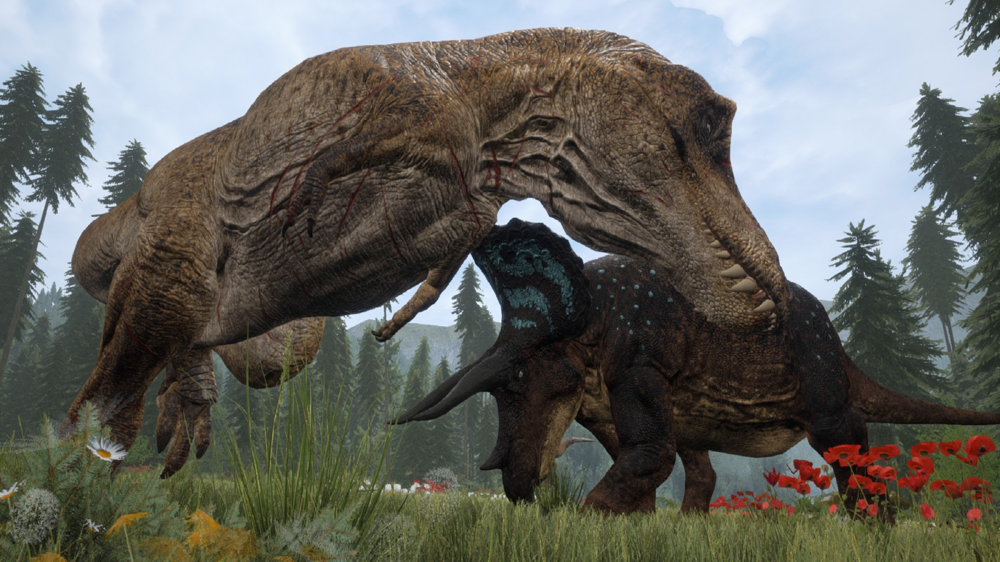

Hvaða Tegund af tölvuleik er þetta?
The Isle er fjölspilunarleikur þar sem spilari fær að velja hvort hann vilji vera rándýr eða bráð, þegar spilari er búinn að því fær hann að velja af 15 mismunandi tegundum af risaeðlum. Markmið leiksins er að lifa af, leita þér til matar og vaxa og verða fullorðin risaeðla sem hefur náð að lifa af í umhverfinu.
Útgáfuár
Leikurinn kom út 2. desember 2015 í early access og er enn til dagsins í dag í early access.
Framleiðendur
Framleiðendur og útgefendur eru Afterthought LLC. Þetta er eini tölvuleikurinn sem þeir eiga undir beltinu.
Markaðshópur
Aðal notendur leiksins eru þeir sem hafa áhuga á survival leikjum og risaeðlum. Aldurshópur er líklega unglingar og er meirihluti þeirra karlkyns.
Hvernig hefur leikurinn þróast.
Leikurinn upprunalega var mjög frumstæður og var ekki mikið úrval af risaeðlum til að spila sem. Umhverfið hefur orðið flottara og flottara með tímanum og einnig hafa animations og modelin á risaeðlunum orðið betri með tímanum. Nú eru líka fleiri features og meira að gera í leiknum.